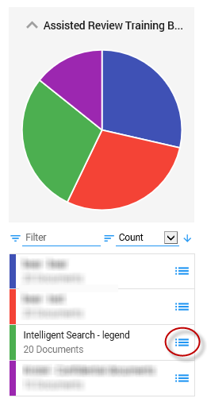

- Define the batch size.
-
Select New Training Batch.

Go to ZyLAB One to open the new training batch in Facet overview:

Tag all documents in the Training Batch as Intelligent Search - R or Intelligent Search - NR.
Return to Assisted Review and view the Statistics and Graphs.
Select Classify Remaining if finding more responsive documents is not worth the time/cost of manually reviewing more documents, and/or the classifier is returning good results (the quality of the classifier is determined based on the results of the statistics and graphs). Set the Classifier Threshold Score (with a value larger than 0.0 and smaller than 1.0, default threshold is set at 0.5). Only documents with a value higher than (not equal to) the Classifier Threshold Score will be classified and put in the Classification Results (Assisted Review Results field).

Otherwise, repeat the process and create a New Training Batch.